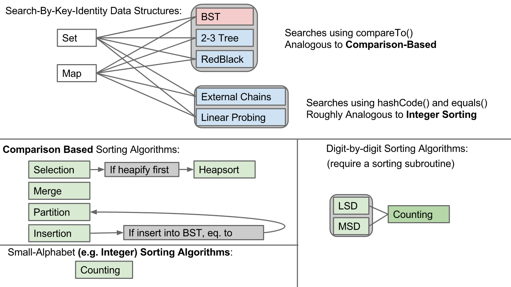
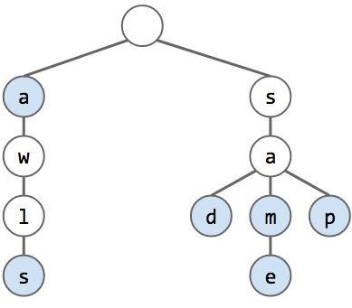
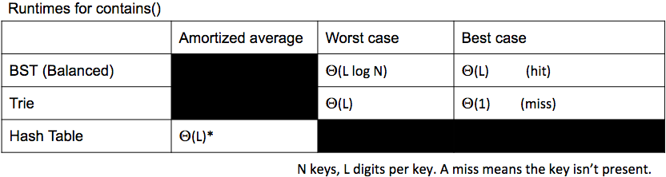
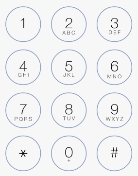

Tries
Rough Summary of Class So Far

- Note, insertion sort with elements inserted into a binary search tree is actually a quicksort in disguise!
- We have the standard set of Comparison Based sorting algorithms, the Integer/Counting based sorting algorithms, and finally the digit-by-digit/Radix sorting algorithms that build off Counting sorts.
- We have ways to search a data structure that are analogous to using the compareTo() of its elements, and we have ways to sort structures that are more analogous to a Integer/Counting sort (with these, we use properties of the element itself, like a hashcode, in our search/sort)
- There also exists a data structure that is analogous to digit-by-digit sorting and searching; it is called a trie
The Trie Structure
- Short for retrieval tree
- Pronounced officially same way as tree, but everyone pronounces it try
- Below is how a trie would look after inserting in: “sam”, “sad”, “sap”, “same”, “a”, and “awls”
- We store the characters in words as a tree of nodes, all with a common root. Words with a common sequence of characters in them will share a commn set of nodes
- Note how the nodes corresponding to the final character in the words have a special blue color/attribute; this is how we track the actual words in our structure: simply get the string of characters in the path from the root to the blue-colored node; this is the word
 - With this example, we would get the following results upon calling
contains(String s):
contains("sam"): True - following the tree we see that there exists nodes 's', 'a', and 'm' in that order (valid path); furthermore the final node 'm' is a blue node, marking that it is a terminal character in a word. Thus we return truecontains("a"): True - same reason as abovecontains("z"): False - no node 'z' exists from the rootcontains("sa"): False - The nodes 's' and 'a' exist in the root and are a valid path, but the terminal node, 'a', is not a blue-colored node. This means that there is no word in our trie structure that ends here, so we must return falsecontains(""): False - same reasoning as above; the root node is not a blue-colored node
- Performance: For a trie with N keys/nodes in it and a key of size L to insert/search,
- Worst case insert time: O(L)
- Worst case search time: O(L)
- Best case search time: O(1) (for a miss on the first of L characters)
- Comparing different implementations:
 - Note: hashtables may look at many unnecessary characters, since as we look up a hashcode we could be comparing to many unrelated elements
- Searching is constant with respect to number of keys
- Main purpose of tries: Prefex Matching and Approximate Matching:
- For example: find all keys that match a given prefix:
prefixMatch(“sa”)
- With above example, this would return "sad", "sam", "same", and "sap"
- Example 2: find longest prefix of a given key
- For both these examples, a trie is much more efficient to use than a hashmap or BST
Trie Implementation: Array-Trie
public class TrieSet {
private static final int R = 256;
private class Node {
boolean exists;
Node[] links;
public Node() {
links = new Node[R];
exists = false;
}
}
private Node root = new Node();
public void put(String key) {
put(root, key, 0);
}
private Node put(Node x, String key, int d) {
if (x == null) {
x = new Node();
}
if (d == key.length()) {
x.exists = true;
return x;
}
char c = key.charAt(d);
x.links[c] = put(x.links[c], key, d + 1);
return x;
}
}
Application: T9 Texting
- Normally in old phones, to type text, each of the numbers from 0−9 represent multiple letters (ex: 2 is 'abc', 3 is 'def', ...) and to get different letters on the same key, we multitap (a is just a single tap on 1, while b is a double tap on 1), see below:
 - An alternate way of texting is T9 texting, where we only press each key once for a letter. Then, with the string of pressed number keys, the program gives us a list of all the possible words that the number string could represent, and we select the desired word from the list
- For example, 4663 could either represent "good", "home", "gone", or "hoof"; so the cell phone returns us a list of these words (possibly ordered by relevance/frequency)
- Note that the letters on the 3 key are 'def', 4 are 'ghi', and 6 are 'mno'
- We can nicely implement this with a trie
- We will want a structure like
TrieMap<String, TreeSet<WeightedWord>> - Our alphabet will be
R = 8, since we are using the numbers 2−9 - The key is the number string the user types, such as 4663
- The returned value is a tree set containing all the possible words (such as "good", "home", "gone", "hoof")
- The values contained in the tree set are of type
WeightedWord, which are Strings that have a compareTo() method that contains some sort of weight - When a word is used, increase its weight, moving its position in the TreeSet if necessary. This is how we add relevance-based ordering to the results
- Note: TreeMap and HashMap would have worked as well, but not as efficient for this use case as a TrieMap
Trie Optimization